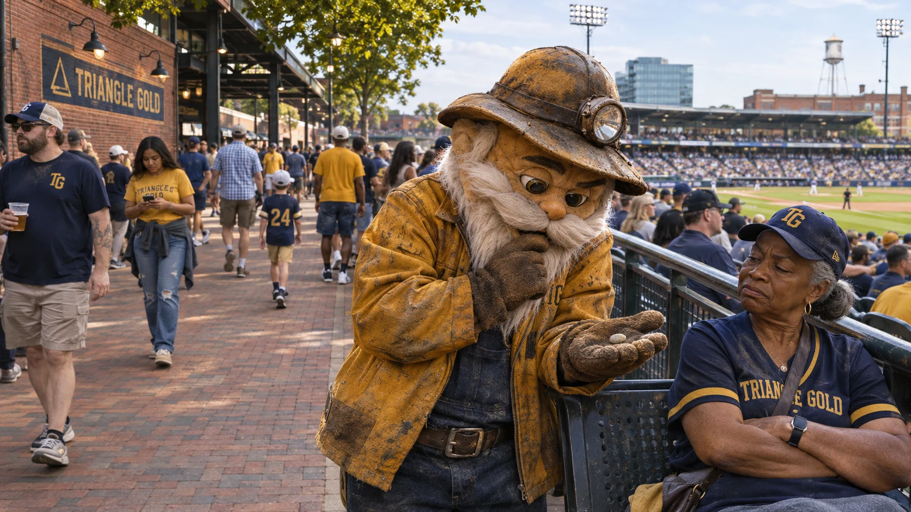
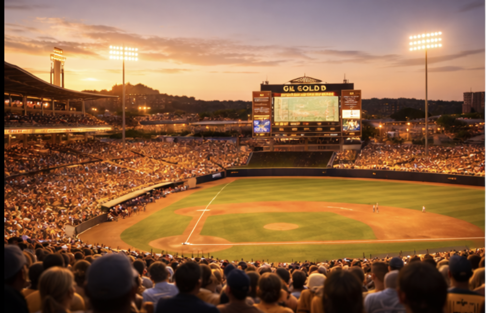
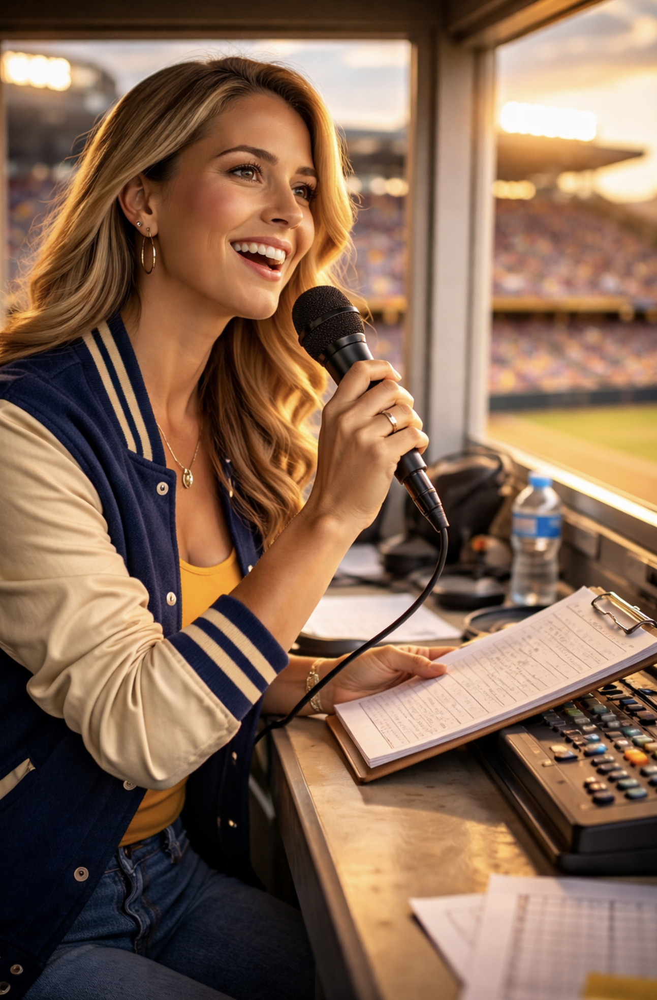

Reed
Play-by-play. A clear count, a quick call and room for the crowd when the inning turns.

A ballgame. A little good fortune.
Meet Nug →Manager: Maren “Lucky” Holt · Home: The Gilt Yard, Durham, North Carolina
View standings →Click a card to flip it over. Claim a card and add content to make it your own! Player cards and other artifacts across GLB can be claimed, curated and crafted — by you. Look for unclaimed artifacts, then click to claim, craft your submission, and submit it to the GLB Board for review. If accepted, you’ll receive a 16-character claim code and we’ll post the artifact with your content and an attribution to the User ID you provide.
Loading the Triangle collection…
| Player | Pos | B/T | Age | Card |
|---|---|---|---|---|
| Caleb Rowan | SP | R/R | 29 | TRI-01 |
| Antonio Beltrán | SP | L/L | 27 | TRI-02 |
| Isaac Friedel | SP | R/R | 31 | TRI-03 |
| Kenji Nomura | SP | R/R | 26 | TRI-04 |
| Devin Marsh | RP | R/R | 28 | TRI-05 |
| Luis Carreño | RP | L/R | 25 | TRI-06 |
| Noah Pryce | RP | R/R | 30 | TRI-07 |
| Ethan Bowen | C | R/R | 32 | TRI-08 |
| Marcelo Ibarra | 1B | L/R | 28 | TRI-09 |
| Joshua Kent | 2B | S/R | 24 | TRI-10 |
| Omar Salcedo | SS | R/R | 27 | TRI-11 |
| Tyrell Winston | 3B | R/R | 29 | TRI-12 |
| Aaron Fletcher | CF | L/L | 26 | TRI-13 |
| Mateo Ríos | LF | R/R | 23 | TRI-14 |
| Calvin Ross | RF | R/R | 31 | TRI-15 |
The mining lamp, the white mustache, the jacket worn thin at the cuffs. Nug has the air of someone who knows where the good stuff is buried. A pebble, a dropped coin or a suspiciously promising patch of concrete can bring the rounds to a complete halt.

A brick ballpark in Durham, with broad concourses and a right-field corner known as The Bright Line, where the last sunlight stays on the seats. The club represents the Triangle; the Yard is its home.
Play-by-play. A clear count, a quick call and room for the crowd when the inning turns.

In-stadium announcer. Lineups, substitutions and the voice carrying across the Yard.
A cap tapped twice before a full count. A lucky coin passed down a row. The Shiners bring their own small rituals to the Yard, with room for someone else’s story beside theirs.